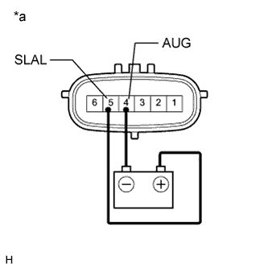

DTC C1831/31 Accumulator Solenoid Malfunction / Upside |
DTC C1832/32 Accumulator Solenoid Malfunction / Downside |
| DTC Code | DTC Detection Condition | Trouble Area |
| C1831/31 C1832/32 | Either condition is met:
|
|

| 1.READ VALUE USING INTELLIGENT TESTER (ACCUMULATOR VALVE) |
Turn the engine switch off.
Connect the intelligent tester to the DLC3.
Turn the engine switch on (IG).
Turn the intelligent tester on.
Enter the following menus: Chassis / KDSS / Data List.
Select the item below in the Data List, and read the value displayed on the intelligent tester.
| Tester Display | Measurement Item/Range | Normal Condition | Diagnostic Note |
| Accumulator Valve (Downside) | Stabilizer control solenoid valve (for Lower Chamber)/ ON or OFF | ON: Stabilizer control solenoid valve closed OFF: Stabilizer control solenoid valve open | - |
| Accumulator Valve (Upside) | Stabilizer control solenoid valve (for Upper Chamber)/ ON or OFF | ON: Stabilizer control solenoid valve open OFF: Stabilizer control solenoid valve closed | - |
Perform the Active Test of the stabilizer control ECU using the intelligent tester.
| Tester Display | Test Part | Control Range | Diagnostic Note |
| Accumulator Valve (Upside) | Stabilizer control solenoid valve (for Upper Chamber) | Valve ON / OFF | The operating sound of the solenoid (clicking sound) can be heard ON: Data List ON OFF: Data List OFF When the Active Test is performed, the solenoid turns on for 3 seconds. |
| Accumulator Valve (Downside) | Stabilizer control solenoid valve (for Lower Chamber) | Valve ON / OFF | The operating sound of the solenoid (clicking sound) can be heard ON: Data List ON OFF: Data List OFF When the Active Test is performed, the solenoid turns on for 3 seconds. |
Check that the solenoid operating sound can be heard, and that the Data List display changes between ON and OFF in response to the Active Test.
|
| ||||
| OK | |
| 2.RECONFIRM DTC |
Clear the DTCs (Click here)
Check for DTCs (Click here).
| Result | Proceed to |
| DTC is output | A |
| DTC is not output | B |
|
| ||||
| A | ||
| ||
| 3.CHECK HARNESS AND CONNECTOR (STABILIZER CONTROL ECU - STABILIZER CONTROL SOLENOID VALVE) |
Disconnect the stabilizer control ECU connector.
Disconnect the stabilizer control with accumulator housing assembly connector.
Measure the resistance according to the value(s) in the table below.
| Tester Connection | Condition | Specified Condition |
| G57-3 (SLAU) - R23-6 (SLAU) | Always | Below 1 Ω |
| G57-3 (SLAU) - Body ground | Always | 10 kΩ or higher |
| G57-1 (SLAL) - R23-5 (SLAL) | Always | Below 1 Ω |
| G57-1 (SLAL) - Body ground | Always | 10 kΩ or higher |
| R23-4 (AUG) - Body ground | Always | Below 1 Ω |
|
| ||||
| OK | |
| 4.INSPECT STABILIZER CONTROL SOLENOID VALVE |
Disconnect the stabilizer control with accumulator housing assembly connector.
Measure the resistance according to the value(s) in the table below.
| Tester Connection | Condition | Specified Condition |
| 5 (SLAL) - 4 (AUG) | 25°C (77°F) | 24.3 to 25.7 Ω |
| Tester Connection | Condition | Specified Condition |
| 6 (SLAU) - 4 (AUG) | 25°C (77°F) | 24.3 to 25.7 Ω |
| *a | Component without harness connected (Stabilizer Control with Accumulator Housing Assembly) |
Check for an operating sound of the stabilizer control solenoid valve.
|  |
for Upper Chamber:
Connect terminal 5 (SLAL) to the positive (+) battery terminal, and terminal 4 (AUG) to the negative (-) battery terminal.
| *a | Component without harness connected (Stabilizer Control with Accumulator Housing Assembly) |
 |
for Lower Chamber:
Connect terminal 6 (SLAU) to the positive (+) battery terminal, and terminal 4 (AUG) to the negative (-) battery terminal.
| *a | Component without harness connected (Stabilizer Control with Accumulator Housing Assembly) |
|
| ||||
| OK | ||
| ||